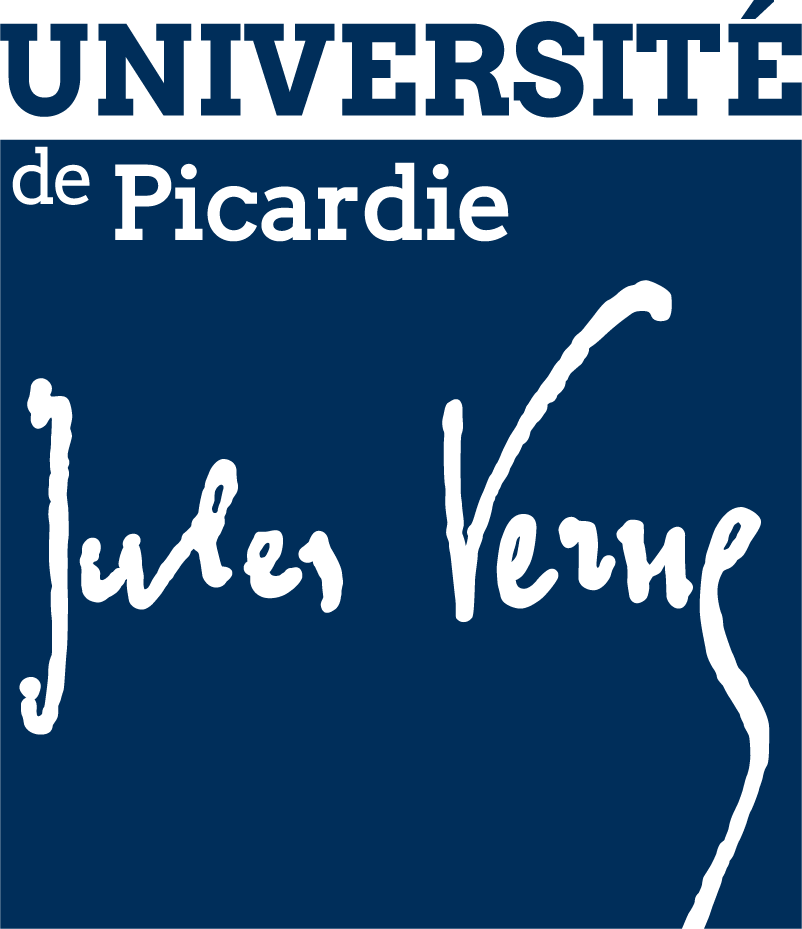
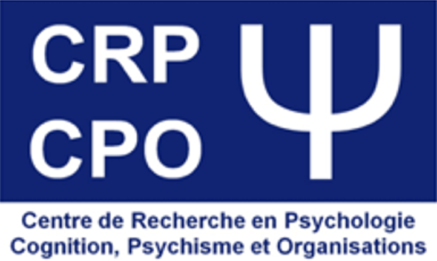
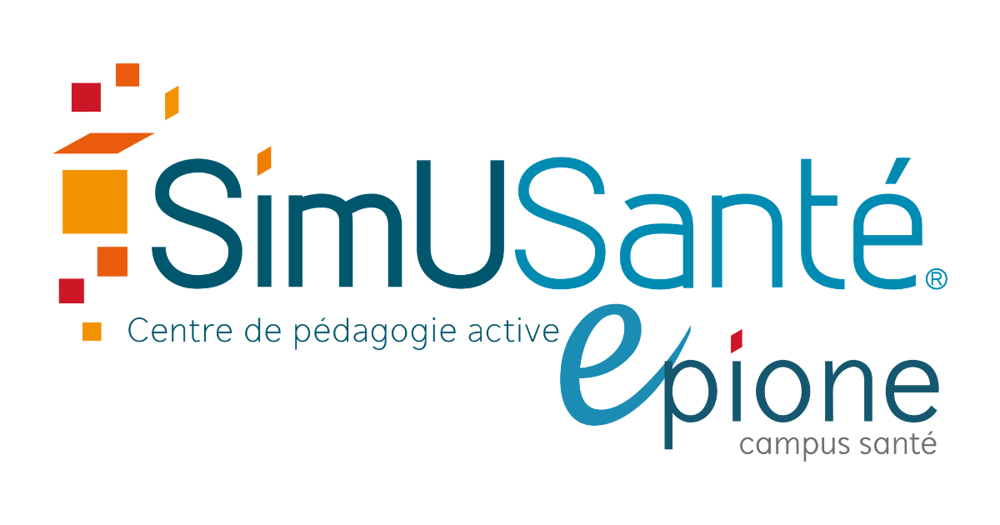
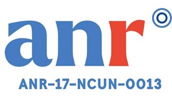
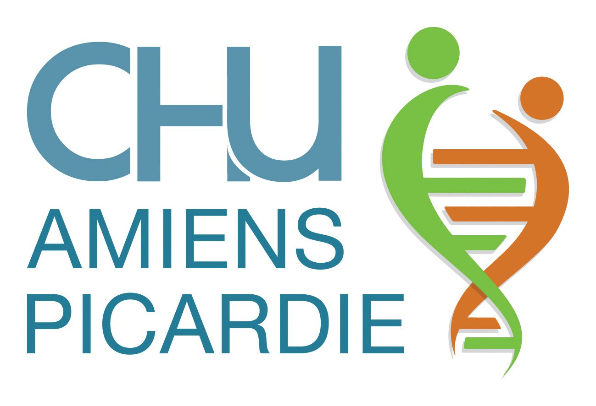

Amélioration de la Réussite et de la Santé Mentale des Etudiants grâce aux Wise Interventions
Congrès SFSP 2025 - Axe Santé Mentale Publique
Message clé
Des interventions brèves issues de la psychologie sociale, peu coûteuses et déployées en prévention primaire universelle ou sélective, permettent de réduire à la fois l'échec académique et la détresse psychologique des étudiants.
Poster
Télécharger le poster (PDF)Version haute résolution pour impression
Références bibliographiques
- Dweck, C. S. (2006). Mindset : The new psychology of success. Random House.
- Miu, A. S., & Yeager, D. S. (2015). Preventing Symptoms of Depression by Teaching Adolescents That People Can Change : Effects of a Brief Incremental Theory of Personality Intervention at 9-Month Follow-Up. Clinical Psychological Science, 3(5), 726‑743. https://doi.org/10.1177/2167702614548317
- Schleider, J., & Weisz, J. (2018). A single‐session growth mindset intervention for adolescent anxiety and depression : 9‐month outcomes of a randomized trial. Journal of Child Psychology and Psychiatry, 59(2), 160‑170. https://doi.org/10.1111/jcpp.12811
- Walton, G. M., & Wilson, T. D. (2018). Wise interventions : Psychological remedies for social and personal problems. Psychological Review, 125(5), 617‑655. https://doi.org/10.1037/rev0000115
Pré-enregistrement
Accéder au protocole sur OSFÉtude interventionnelle RCT 3 bras - Design longitudinal
Publications associées
-
Rigaud, K. (2024). L'application de la pleine conscience pour renforcer l'état d'esprit de développement dans l'enseignement supérieur en France : Une approche permettant de réduire le taux d'échec et d'améliorer la santé mentale des étudiant·es ?
Thèse de doctorat - Université d'Artois - Rigaud, K., Orosz, G., Parant, A., Salamon, J., Amoura, C., Voisin, D., Caruana, S., Parada, S., Török, L., Roland-Lévy, C., Walton, G. M., & Dweck, C. S. (in preparation). The Untapped Potential of Growth Mindset Interventions by Assessing Minority Status in French Higher Education.
- Orosz, G., Török, L., Takacs, Z. K., Evans, K. M., Sik, K., Rigaud, K., Gál, É., & Bőthe, B. (2024). “Mindfulset”—Harnessing or unleashing learning potential through mindfulness mindset. Journal of Educational Psychology , 116(3), 466‑488. https://doi.org/10.1037/edu0000839
- Rigaud, K., Török, L., Amoura, C., Carton, A., Salamon, J., & Orosz, G. (2025). Changer pour apprendre : L’état d’esprit de développement comme levier de transformation éducative. Psychologie Française. https://doi.org/10.1016/j.psfr.2025.01.001
- Rigaud, K., Török, L., Garai-Takacs, Z., Salamon, J., Tóth-Király, I., Bőthe, B., & Orosz, G. (2025). Navigating academic setbacks with intention and self-efficacy for decentering and self-compassion.Personality and Individual Differences , 246(3), 113360. https://doi.org/10.1016/j.paid.2025.113360
Contact
Clarisse Grados
Clarisse.Grados@outlook.fr
ORCID: 0009-0006-1240-0791
Kévin Rigaud
kvnrigaud@gmail.com
ORCID: 0000-0001-9813-1575
Gábor Orosz
gaborosz@gmail.com
ORCID: 0000-0001-5883-6861
Institutions partenaires




